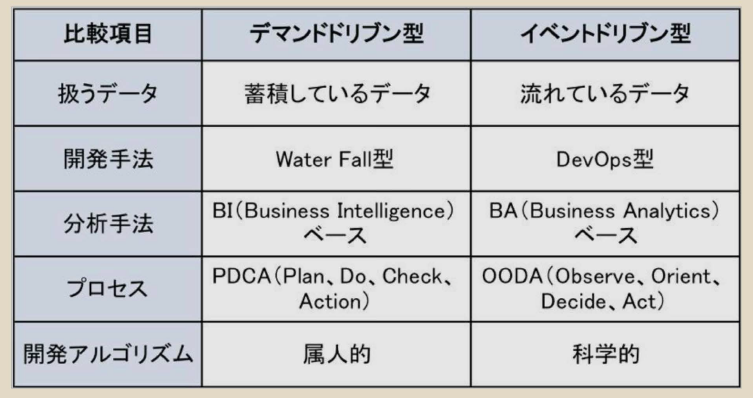

第1章 IoT時代のシステム構築はイベントドリブン型になる
モビリティ
SMBC
SMACS
Social, Mobile, Bigdata, Cloud, Security
デマンドドリブン型システムの限界
イベントドリブン型システムの登場
モノづくりが根本から変わっていく
第2章 IoT活用で問われているのは発想力、ブレインライティングが有効
第3章 IoTが導く第3のドリブンは"エモーション（感情）"
IoTでデータを再集中させるセンサーの課題が未解決
第5章 IoTで活性化するロボットと人工知能（AI）
第6章 IoTが実現する社会に向けた戦略を確立せよ
SMBC
ドローン
ウェラブル
センサー
Mobileコマース
交通情報
フォグコンピューティング
デマンドドリブンとイベントドリブンが融合
従来のITは、デマンドドリブン型
IoTによって実現されるのは、デマンドドリブンとイベントドリブンの融合
人々、M2Mで、より最適なモノやプロセスなどを提案する究極の 1 on 1

これからのプロセスは、OODA(Observe, Orient, Decide, Act)の流れで柔軟に対処しなけばならない
OODAでは、常に動向を監視（Observe）しておき、ここぞという時に標的を定め（Orient）し、決定（Decide）し、アクション（Act）を取る
ビジネスを含めて科学的アプローチが主流
ICTの発展が、これからの社会を切り拓く